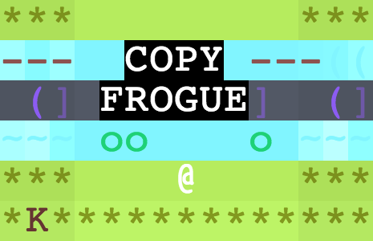
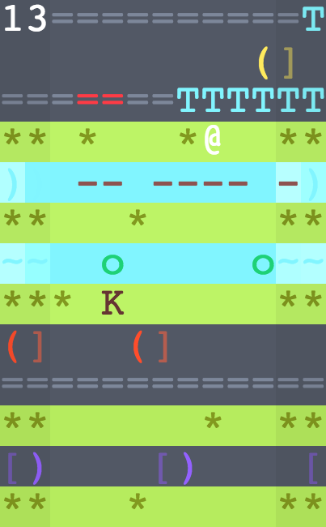
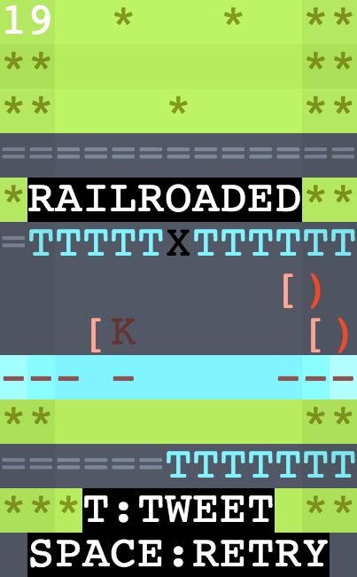
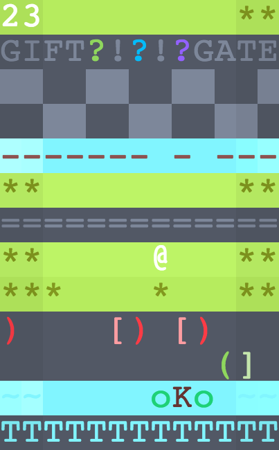

COPY FROGUE WAS MADE BY CAP PETSCHULAT (@CPETS) FOR THE 2015 7DRL CHALLENGE
COPY FROGUE IS A KESTREL SIMULATOR WITH FROGUELIKE ELEMENTS
COPY FROGUE HAS A BEGINNING, A MIDDLE, AND AN END
COPY FROGUE DISRUPTS VI-KEY NAVIGATION BY UTILIZING SOCIAL MEDIA INTEGRATIONS
INQUIRIES: ZFCD21@GMAIL.COM
TITLE

WAITING FOR THE TRAIN TO PASS

NOT WAITING FOR THE TRAIN TO PASS

A MINOR SPOILER

COPY FROGUE IS NOT ASSOCIATED WITH CROSSY ROAD OR ITS AUTHORS
IF YOU LIKE COPY FROGUE GO PLAY CROSSY ROAD INSTEAD